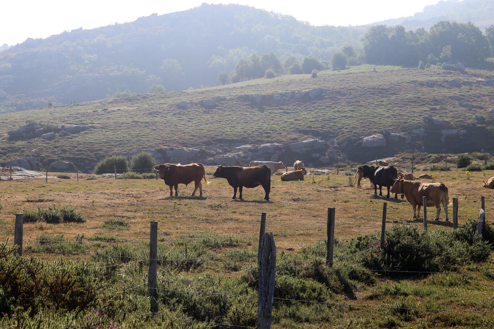

Medicina y Salud
Las protestas de Salamanca por la tuberculosis bovina son más que política: son un enorme problema de salud pública
Ayer, decenas de ganaderos trataron entrar por la fuerza en la Delegación Territorial de la Junta en Salamanca en una protesta contra los actuales protocolos sanitarios contra la tuberculosis bovina. El enfrentamiento, que duró cuatro horas, se saldó con 11 policías heridos, un detenido y la amenaza de boicot a las medidas de saneamiento del ganado a partir del 12 de junio. ¿Qué está pasando en Castilla y León? Está pasando la tuberculosis bovina. La tuberculosis bovina (TB) es una enfermedad infecciosa crónica que, como sugiere su propio nombre, suele afectar al ganado bovino -- pero que también afecta a otros animales (domésticos o silvestres) y al ser humano (se calcula que el 10% de las tuberculosis humanas están causadas por M. bovis).
Una enfermedad compleja de gestionar
El problema fundamental es que se trata de una infección muy insidiosa. Son muy pocos los animales que se ven afectados de forma fulminante y, de hecho, la bacteria puede estar años en el ganado sin causar ningún tipo de molestia, esperando su oportunidad. Además de lenta, la enfermedad disimula muy bien. "Los signos clínicos de la tuberculosis bovina no son específicamente distintivos y, por lo tanto, no permiten que los veterinarios establezcan un diagnóstico definitivo" basándose en ellos hasta que ya es tarde.